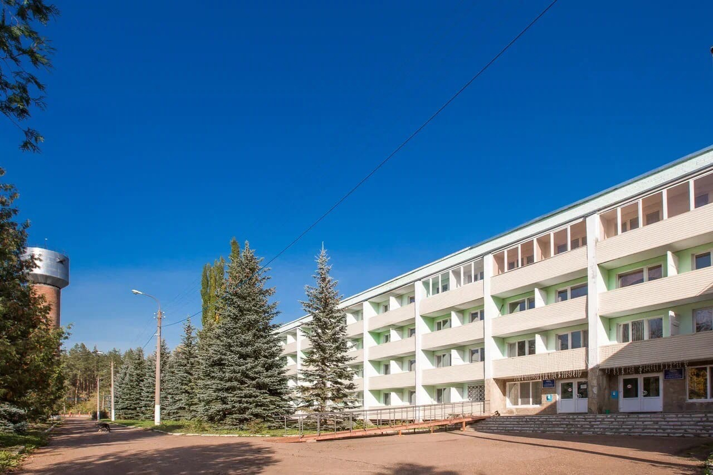
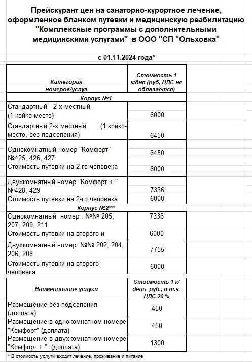

Добро пожаловать в Санаторий Ольховка!
Санаторий-профилакторий «Ольховка» располагается в самом «сердце» лесного массива. Здесь вы сможете насладиться свежим воздухом, живописными пейзажами и тишиной, которая способствует полному восстановлению сил. Наша история началась более 20 лет назад, когда мы открыли двери для первых гостей. С тех пор мы стали известны как одно из лучших мест для отдыха и лечения в регионе. Мы предлагаем широкий спектр медицинских услуг и комфортабельные номера, чтобы каждый наш гость смог получить максимальное удовольствие от пребывания.
Прейскурант цен на санаторно-курортное лечение
| Категория | Стоимость 1 к/дня (руб) |
|---|---|
| Стандартный 2-х местный (1 койко-место) | 6000 |
| Однокомнатный номер "Комфорт" | 6450 |
| Двухкомнатный номер "Комфорт + " | 7336 |
Комплекс медицинских услуг
Мы предлагаем широкий спектр медицинских услуг, включая:
- Медикаментозное лечение
- Спелеотерапия
- Лечебные ванны
- Массаж ручной
- Фитобар
- Физиотерапия
- Психотерапевтические сеансы
Описание санатория
Санаторий «Ольховка» — это лучший санаторий в регионе, где вы сможете не только отдохнуть, но и восстановить здоровье. Мы предлагаем уникальные программы лечения и реабилитации, которые включают в себя как традиционные, так и современные методы. Наши опытные специалисты помогут вам выбрать оптимальную программу, чтобы вы могли насладиться каждым моментом вашего пребывания.
В нашем санатории доступны такие услуги, как:
- Лечебные процедуры
- Фитнес и активный отдых
- Кулинарные мастер-классы
- Экскурсии и прогулки по живописным местам